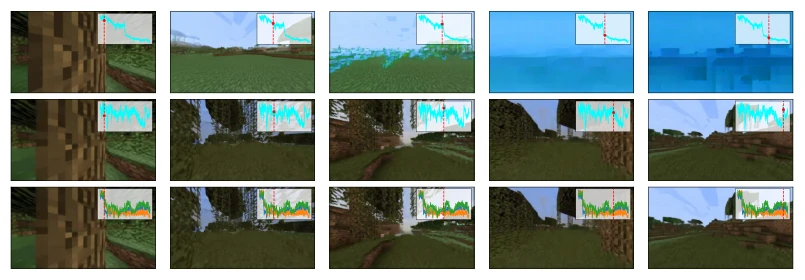
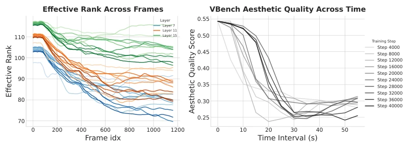
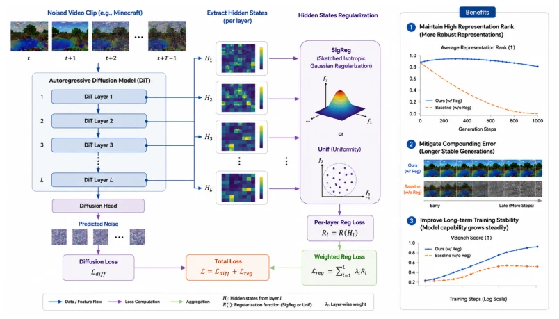
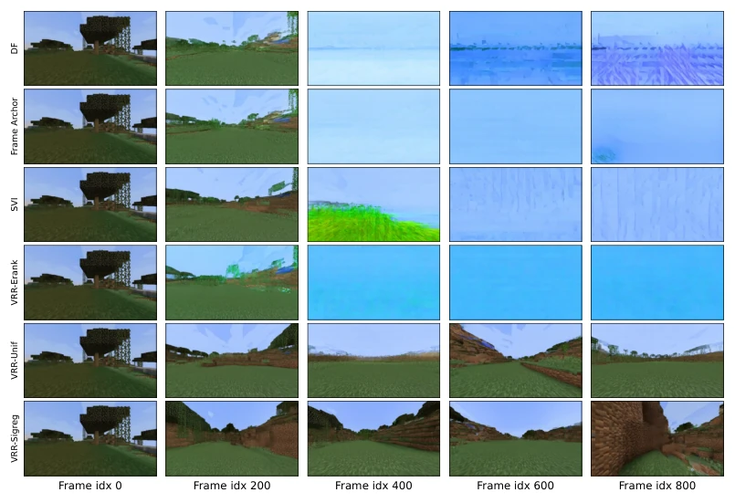
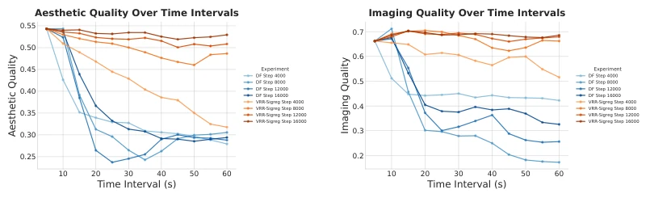

This paper essentially pours cold water on autoregressive video world models. The authors find that the so-called collapse of long video generation quality is not merely a sampling issue, but rather a dimensional collapse of the model's internal representations. Most ironically, stacking data according to conventional routines is not only useless but actually makes the situation worse. Although the proposed VRR method is simple, just adding a regularization term, it indeed pulled Diffusion Forcing's aesthetic score from 38 to 55 on VBench, with effects clearly visible. However, all experiments were run in Minecraft, how is the physical consistency in the real world? Also, why does the representation get worse when there is more data? The paper did not delve deep, leaving it for the future. In short, this is a solid work that opens the black box to see how it collapses internally, but there is still a distance from a general world model.
研究动机Motivation
自回归视频扩散模型（如 Diffusion Forcing, Chen et al., 2024a）在长程生成时面临严重的误差累积（compounding error），导致帧质量随时间急剧下降。现有工作如 Frame Anchor (Khachatryan et al., 2023) 或 SVI (Li et al., 2026) 试图通过锚定帧或误差回收缓解，但难以根本解决。更关键的是，主流 Scaling Law 认为数据越多模型越强，但本文发现扩大训练集反而加剧了误差漂移。现有研究多关注采样策略优化，忽视了模型内部隐藏状态（hidden states）的演化机制。为何长时推理中表征会退化？为何数据量增加无法提升鲁棒性？这些问题未被充分解决，导致长视频生成在机器人仿真等具身智能任务中仍不可靠。
Autoregressive video diffusion models (such as Diffusion Forcing, Chen et al., 2024a) face severe compounding error during long-range generation, causing frame quality to decline sharply over time. Existing works such as Frame Anchor (Khachatryan et al., 2023) or SVI (Li et al., 2026) attempt to alleviate this through frame anchoring or error recovery, but struggle to solve it fundamentally. More critically, the mainstream Scaling Law posits that more data makes the model stronger, but this paper finds that expanding the training set instead exacerbates error drift. Existing research mostly focuses on sampling strategy optimization, neglecting the evolution mechanism of the model's internal hidden states. Why do representations degrade during long-term inference? Why does increasing data volume fail to improve robustness? These issues remain insufficiently addressed, leading to unreliable long video generation in embodied AI tasks such as robot simulation.

Figure 2: Top row: Video frames sampled from a 40k-step checkpoint trained with the vanilla dif- fusion forcing method. Hidden states from DiT’s 7th layer are extracted to analyze the effective rank (Erank), which reveals a direct correlation between visual collapse and abrupt Erank reduction. Middle row: Samples generated by a 4k-step checkpoint under the same training scheme; stable Er- ank values are observed when video content remains coherent. Bottom row: Identical experimental settings as the middle row, with frame quality quantified via normalized SSIM, PSNR and LPIPS.

Figure 3: We trained for one epoch on the 18k training set using the vanilla diffusion forcing method and calculated the Erank corresponding to these checkpoints. We observed that the Erank values at step 4000 and step 8000 are generally higher and maintain stability over longer durations. In con- trast, increasing the number of training steps not only reduces the overall Erank but also accelerates its degradation during long-range reasoning.
方法Method
核心是 Video Representation Regularization (VRR)。整体流程是在 DiT 训练阶段，除了标准的 Diffusion Forcing 损失外，额外增加一个正则化项作用于中间层的隐藏状态。具体而言，作者定义有效秩（effective rank, erank）来量化表征的维度丰富度。当 erank 下降时，意味着模型表征坍缩。VRR 通过 SigReg 或 Uniformity Loss 约束隐藏状态向量的分布，迫使奇异值分布更均匀，从而维持高 erank。公式上，总损失为 L = L_DF + Σλ_i L_reg(H_i)。作者观察到，随着训练步数增加，模型倾向于学习捷径，直接复制相邻帧以维持时间一致性，但这导致有效信息丢失。VRR 通过正则化打破这种捷径依赖，强制模型保留更丰富的潜在特征。实验表明，对特定层（如 0, 7, 15 层）施加正则化效果最佳。这种方法不改变推理架构，仅增加训练约束，旨在防止模型学习复制相邻帧的捷径，从而增强对误差累积的抵抗力。
The core is Video Representation Regularization (VRR). The overall process is during the DiT training stage, in addition to the standard Diffusion Forcing loss, an extra regularization term is added acting on the hidden states of intermediate layers. Specifically, the authors define effective rank (erank) to quantify the dimensional richness of representations. When erank decreases, it means model representation collapse. VRR constrains the distribution of hidden state vectors through SigReg or Uniformity Loss, forcing the singular value distribution to be more uniform, thereby maintaining a high erank. Formally, the total loss is L = L_DF + Σλ_i L_reg(H_i). The authors observe that as training steps increase, the model tends to learn shortcuts, directly copying adjacent frames to maintain temporal consistency, but this leads to loss of effective information. VRR breaks this shortcut dependency through regularization, forcing the model to retain richer latent features. Experiments show that applying regularization to specific layers (e.g., layers 0, 7, 15) yields the best results. This method does not change the inference architecture, only adds training constraints, aiming to prevent the model from learning shortcuts to copy adjacent frames, thereby enhancing resistance to error accumulation.

Figure 1: Overview of our proposed method. Existing autoregressive diffusion models suffer from compounding errors during long-range generation, and this issue cannot be effectively mitigated by simply scaling up training data. We introduce hidden states regularization into DiT layers to strengthen the model’s representation capacity, alleviate compounding errors, and enable consistent performance gains as training proceeds.
The dataset uses 18k Minecraft sequences from MineRL, each segment 1200 frames. Baselines include Diffusion Forcing, Frame Anchor, and SVI. Evaluation adopts VBench's Aesthetic Quality and Imaging Quality. Results show that VRR significantly outperforms baselines after 16k training steps, with aesthetic score improving from 38.65 to 55.56. Figure 6 indicates that as video time progresses, baseline quality continues to decline, while VRR remains stable. Ablation studies show that SigReg and Uniformity Loss perform best, while directly optimizing erank performs worse than expected. Additionally, the selection of regularization layers is crucial, full-layer regularization is inferior to key layer combinations. This confirms the critical role of representation stability in long video generation.

Figure 5: Frames of videos generated from the checkpoint of all methods at the 16,000th training step

Figure 6: The video quality of vanilla Diffusion Forcing continuously degrades as the video pro- gresses. Our method maintains high scores across VBench metrics.